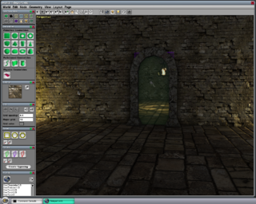
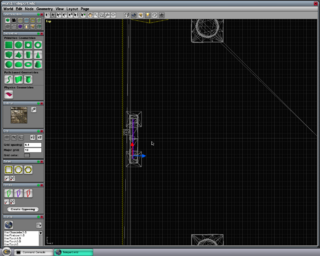
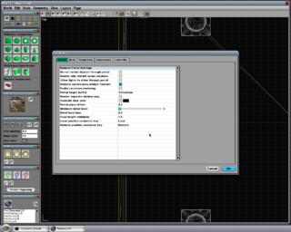
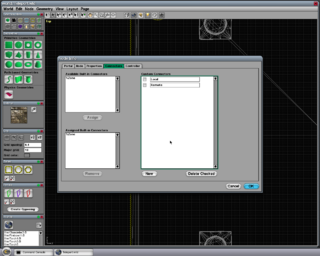
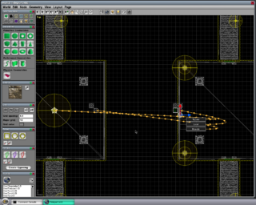
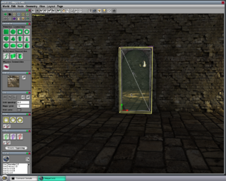
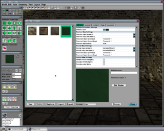
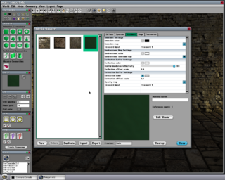
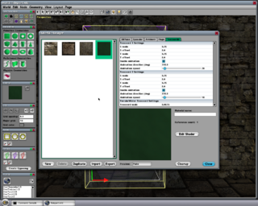

Teleport Tutorial
From C4 Engine Wiki
This tutorial describes the method used to create a remote portal that can see another part of a level, apply a material with animated waves to the portal, and make the destination image float up and down. This tutorial doesn't have you modify a level, but instead examines what has been done in a fully functional example.
To follow this tutorial, you need the Data/Tutorial/world/Teleport.wld file that is included in the C4-xxx-Data.zip distribution.
To enlarge any of the screenshots below, click on the thumbnail icon below the image. If you're using a Mac, all shortcuts that begin with the control key should be changed to the command key.
Contents |
Step 1: Open Teleport.wld
Open Data/Tutorial/world/Teleport.wld in the World Editor by typing Ctrl-O or by entering world world/Teleport into the Command Console. The World Editor will display the scene shown in Figure 1 where the camera is inside one of two big rooms connected by long hallways. The remote portal is visible right away as a doorway with a wavy greenish material inside it through which you can see the other big room in the level.

Take a moment to play the level by typing Ctrl-P in the editor. (You'll need to be running the demo game in order to walk the player through the level.) Walk the player up to the portal using the standard WSAD keys and mouse to move. Notice that the material has a greenish tint and that animated waves are distorting the image of a distant room that can be seen through the portal. The image is also slowly floating up and down because an Oscillation Controller has been assigned to the destination marker (see Step 3 below).
In the demo game, the player can teleport to the other room by running into the portal. This particular behavior is defined by game-specific code and is not built into the core engine. There are several examples of how to teleport characters and projectiles in the source code for the demo game.
To return to the World Editor, open the console with the tilde key and type Ctrl-Shift-P.
Step 2: Examine the Remote Portal
The image of the other room is rendered into the refraction buffer through a remote portal in the level. In this step, we will look at the settings that have been applied to this portal in order to render the image we want.
First, we need to select the remote portal. It's embedded in the geometry for the doorway, so we need to deselect the geometry type from the current selection mask. The Node Management Page can be found under the Editor tab, and it lists all of the various types of nodes. Unchecking the geometry type indicates that geometries can no longer be selected. Now switch to the Top viewport by typing Ctrl-1, and zoom in a little on the doorway that can be seen on the left wall of the rightmost large room. There is a purple line with arrows pointing to the left. This is the remote portal. Click on the line to select it, and the editor window should appear as shown in Figure 2.

Once the remote portal has been selected, type Ctrl-I to open the Node Info window. The settings under the Portal tab should appear as shown in Figure 3. All of the settings use the default values except for two. First, the Portal target buffer setting has been set to Refraction. This tells the engine to render the image seen through the portal into a separate frame buffer that holds the image accessed when an ambient refraction color is specified by a material. Second, the Remote camera uses oblique frustum box has been checked. This tells the engine to use a special projection matrix trick to align the near plane of the remote camera frustum with the plane of the portal to clip geometry that would otherwise stick out in front of the plane.

Now click on the Connectors tab in the Node Info window, and you will see the settings shown in Figure 4. The remote portal uses one built-in connector named %Zone and two custom connectors named Local and Remote. The %Zone connector is used to link the portal to the destination zone, and the Local and Remote connectors are linked to markers that define the transform between the portal's local coordinate system and the destination where the image will actually be rendered. These are discussed in the next step.

Step 3: Examine the Locator Markers
Close the Node Info window by clicking the Cancel button or hitting the Escape key. Select the Connect Tool by clicking on it at the top of the editor window or using the 5 key as a shortcut. The three connectors attached to the remote portal will appear along with lines of arrows showing what nodes they are connected to, as shown in Figure 5. Zoom out a little to see all of the connected nodes.

You can double-click on any of the connectors to select the node that it is connected to. The %Zone connector is connected to the zone that contains the big room on the left side of the level. This connection tells the engine that the remote camera should be placed in this zone when rendered the image that can be seen through the portal. The Local and Remote connectors are connected to locator markers that, taken together as a pair, tell the engine how to transform the main camera into the coordinate system in which the destination image will be rendered. The marker connected to the Local connector specifies a reference point and orientation on the portal itself, and the marker connected to the Remote connector specifies the corresponding point and orientation at the destination. The marker at the destination can be moved or rotated to instantly change the camera transform for the image seen through the portal.
If you select the locator marker connected to the Remote connector by double-clicking on the connector, then you can see that it has two connectors of its own named Start and Finish. These are used in conjunction with an Oscillation Controller that has been assigned to the marker that makes it float up and down for added effect. See the Oscillation Tutorial for more information about oscillating nodes.
Step 4: Examine the Portal Material
Change the main viewport to the Perspective view by typing Ctrl-4, and switch to the ordinary Select Tool by selecting it at the top of the editor window or using the 1 key as a shortcut. Re-enable geometry node selection by clicking the geometry type icon in the Selection Mask Page, and click on the geometry covering the interior of the doorway where the remote portal is. You should now see a rectangular geometry selected as shown in Figure 6.

Select the Material Pickup tool from the Material Page, and click on the selected geometry to change the current material to the material used by the geometry. (We didn't actually have to select the geometry first, but doing so makes it obvious where to click to grab the material.) The material used on the portal geometry just uses the standard attribute settings and does not require that you use the Shader Editor.
Under the Diffuse tab, shown in Figure 7, the Diffuse color attribute has been set to the green color that is responsible for the green tint seen in the portal. The Normal map (primary) and Normal map (secondary) attributes have been set to two water wave textures that can be found in the Data/Demo/texture/ directory. Notice that the two normal maps use different texture coordinates. These are animated independently so that the normal maps are combined in a random-looking way.

Under the Ambient tab, shown in Figure 8, the Refraction color attribute has been set to a gray color. This is multiplied by the colors in the refraction image to determine how much light gets through. The Refraction offset scale attribute determines how large the distortion caused by the normal maps is. Higher numbers correspond to a more intense distortion effect.

Under the Texcoords tab, shown in Figure 9, the scales of both sets of texture coordinates has been set to 0.25. Smaller numbers here correspond to larger waves. Animation has been enabled for both sets of texture coordinates, and the direction and speed have been set to different values so that the textures move in different directions. These values can be changed freely to modify the animation of the wavy effect.
